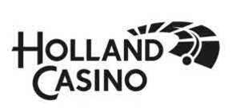

Trade Mark Journal No.2025/047 21 November 2025
UK00004291133 7 November 2025 (9,28,35,38,41,43)
Mark 1

Mark 2
Mark 3
- Class 9
- Devices and instruments for recording, transmitting, displaying, and editing sound, images, or data; Recorded and downloadable media, computer software, blank digital or analog recording and storage media; Computers and computer peripherals; Gaming software that generates or displays the results of slot machine bets; Casino management software; Interactive casino games offered via a computer platform or a mobile platform; Electronic lottery tickets; Encrypted loyalty cards; Software related to betting; Data management software; Downloadable applications; Mobile software; Entertainment software; Software for managing data and files and database software; Computer software for managing online games and games of chance; Computer hardware for games and games of chance; Electronic publications (downloadable) relating to games, gambling and games of chance; Software for streaming audiovisual and multimedia material via the internet and global communication networks; Software for streaming audiovisual and multimedia material to mobile digital electronic devices; Software programs for video games; Downloadable video game programs; Application software; Apps.
- Class 28
- Games, toys, and playground equipment; Video game devices; Gaming machines; Slot machines; Gambling machines; Table games and gambling devices; Chips for gambling games; Printed lottery tickets; Scratch cards; Video game equipment, arcade games, and slot machines; Card games; Roulette sets; Roulette tables; Roulette wheels; Roulette chips; Bingo cards; Bingo chips; Bingo games; Bingo scoreboards; Poker machines; Poker chips; Machines for playing games of skill or games of chance; Coin-operated gaming machines and amusement machines; Gaming equipment and equipment for electronic games and electronic poker games; Poker gaming equipment, including playing cards, poker chips, table felt, machines for shuffling playing cards.
- Class 35
- Advertising; Management, organization, and administration of commercial affairs; Administrative services; Organizing and managing consumer loyalty programs; Organizing, implementing, and supervising loyalty and incentive campaigns; online data processing; data processing, data systematization, and data management; Organizing and holding promotional events; Organizing events for publicity and/or commercial purposes; Business consultancy; Management, organization, and administration of commercial affairs related to casino services, games of chance, lotteries, betting, gambling, and card games; business services related to franchises.
- Class 38
- Telecommunications services; Providing and granting access to a multi-user network system, with access to gambling and betting information and services via television, the Internet, other networks, and other media or communication channels; streaming audio, visual material, and audiovisual material via a global computer network; streaming e-sports events.
- Class 41
- Education; Training; Recreation services; Sporting and cultural activities; Services in the field of education, recreation, and sports; Entertainment services; Live entertainment; Gambling; Games of chance; Online gambling; Online casino services; Services in the field of casinos and gambling; Organizing gambling; Video game services; Casino and gambling facilities; Leasing of casino games; Casinos; Prize draws (lotteries); Organization and holding of lotteries; Bingo halls; Bingo games; Services for playing bingo via computers; Services related to poker games; Betting; Betting services; Provision of rooms for playing card games; Organization of games of chance for multiple games; Information services related to gambling; preparation, execution, and organization of concerts and events; organization of recreational, sporting, and educational events; entertainment in the form of video and computer games; organization, production, holding, and presentation of events in the field of entertainment; organization, production, holding, and presentation of talent shows, competitions, quizzes, exhibitions, social events for relaxation, educational events, recreational events, sporting events, entertainment events, shows, (live) performances, concerts, and events with audience participation; Services related to games of chance, gambling, betting, casino games, and card games; organization, production, and presentation of poker tournaments, competitions, games, and events; games of chance.
- Class 43
- Restoration (providing food and beverages); catering; restaurant; restaurant services; bars; bar services; cafeterias; café services; providing temporary accommodation.
Holland Casino N.V.
Representative: Wilson Gunn